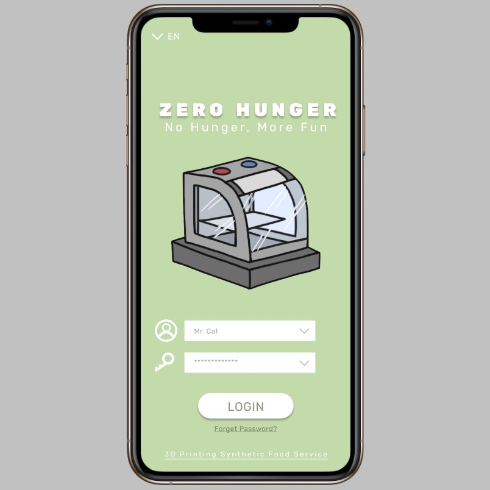
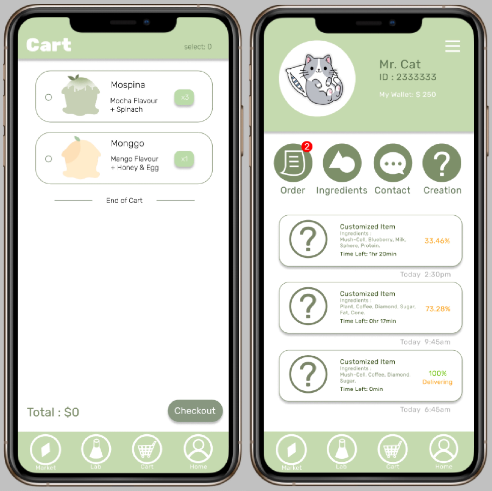
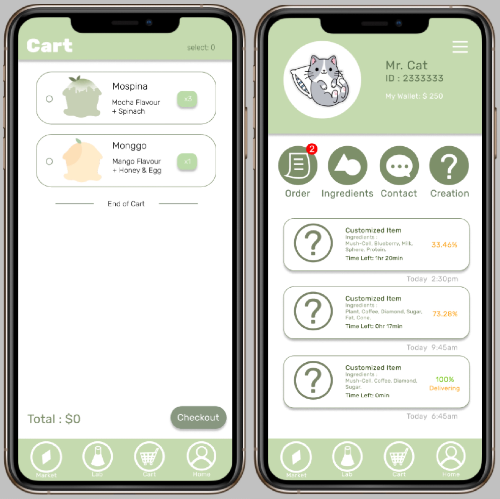

设想未来
作品描述
在这个作品当中，我决定制作一个简单的应用程序去展示我设想的其中一个未来，我负责并参与制作了程序和其中的UI设计。
“设想未来”是一个小组作品，由我和彭心玥齐力完成。 我们设计了一个未来，当饥饿成为一个严肃问题时，科技的发展和更多的策略让人们发明了一种新型网购程序；为大部分人带来便捷，便利的食物供应。
本应用程序拥有许多功能。 人们可以选择网购食物，甚至可以自行研发“未来食物”；每个人都可以拥有自己独特的菜单和配方，程序中会提供不同的口味和原材料以供客户选择/搭配， 还可以将自己特殊的菜单/配方在程序内的“市场”中出售。 同时，我们也决定加入一些节日特别活动，推出一些稀有的口味/材料来提高人们的参与度，并确保以更加公平、大众的方式让大家获得少有/稀缺的资源。
☆
 

其它
链接: 点此进入
研发者/设计师：彭心玥，常莉其
图标设计师：常莉其
总策划：彭心玥
☆